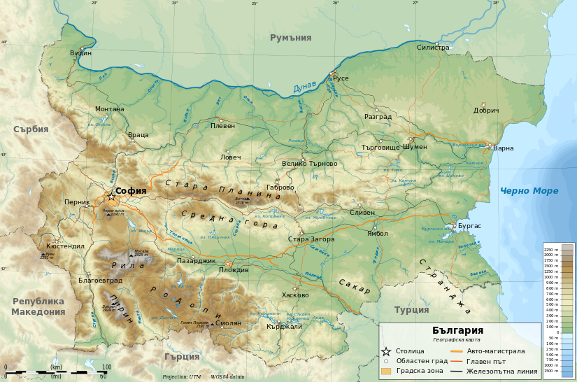
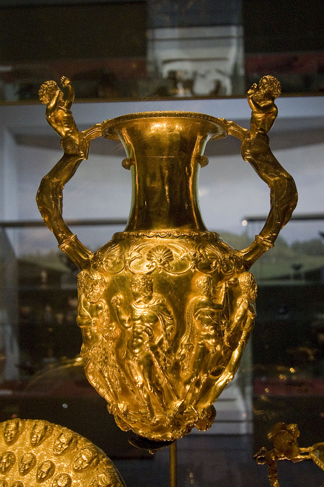
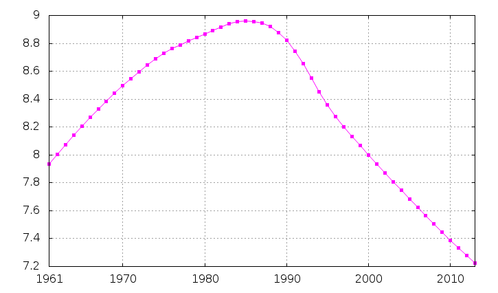
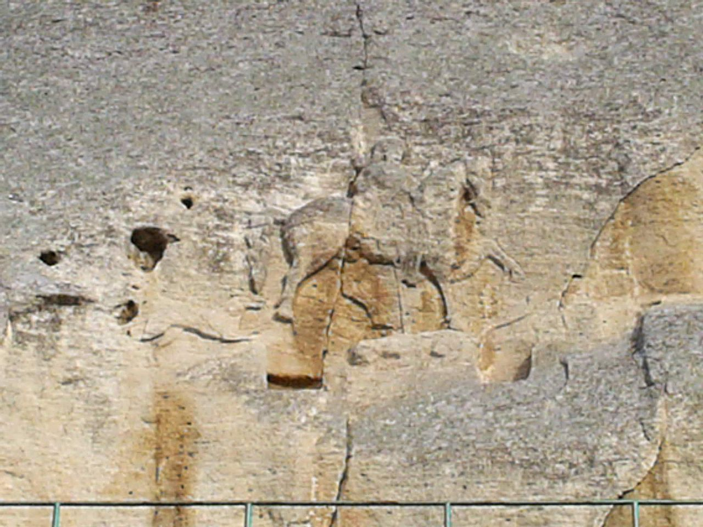

Информация за България
География
България е държава в Югоизточна Европа, граничеща на север с Румъния, на запад със Сърбия и Република Македония, на юг с Гърция и Турция, а на изток с Черно море. Река Дунав, от устието на река Тимок до Силистра е естествената природна граница между Република България и Румъния. Територията на страната е 110 993 km², от които 261.4 км2 са крайгранични речни води и 101.3 км2 са крайгранични речни и морски острови. Към тази територия не се включва дванадесетмилната морска акватория.

История
Праисторически култури в българските земи включват: неолитната „Хаманджия“ и Винчанската култура (6-о до 3-то хилядолетие пр.н.е.), енеолитната „култура Варна“ (5-о хил. пр.н.е., вж. също Варненски некропол) и езерската култура от бронзовата епоха. Карановската култура пък дава хронологическа система за новокаменната епоха (неолит и енеолит) на Балканския полуостров. Едни от най-ранните обитатели на Балканския полуостров са траките. За произхода им липсват достатъчно исторически извори, но най-вероятно произлизат от прототракийски народ, включвал представители както на автохтонно население, така и на индоевропейски народи.[33] Траките живели разделени на различни племена до около 500 г. пр.н.е., когато цар Терес обединява повечето от тях под управлението на Одриското царство. Една част от тях е покорена за кратко от Александър Велики, а по-късно, около 1-ви век – от Римската империя. След римляните и гърците, към 4-ти век присъстват и готите.

Население
Населението на България е 7 364 570 души според окончателните резултати от последното официално преброяване от 2011 г.[44] България е в състояние на демографска криза, която е и един от най-тежките проблеми на страната.[45] Естественият прираст на населението е отрицателен (-0,796% за 2012) и е четвъртият най-нисък в света – единствено Сирия, Йордания и Молдова имат по-нисък прираст на населението (съответно -0,797%, -0,97% и -1,01%).[46] Средната възраст на българските граждани се изчислява на 41,4 години, една от най-високите в Европа, като в същото време продължителността на живота е 73,1 години, една от най-ниските на континента. България е на 204-то място от 228 държави и територии по раждаемост в света – на 1000 души се раждат 9,2 деца.[47] В същото време смъртността е 10-тата най-висока в света с 14,3 смъртни случая на 1000 души население, като единствено Русия, Украйна и ЮАР, както и няколко държави от т.нар. Четвърти свят, имат по-висока смъртност.

Култура
Древност и античност Българските земи са наследили едни от най-древните културни богатства в Европа. Така например Варненското съкровище от V. – началото на IV хил. пр.н.е., принадлежащо на Варненската култура е най-старото обработено злато в света[83][84]. През II. хил. пр.н. Балканите са населени от траките, сред които са разпространени долмени, могили и образа на тракийският конник (виж. Тракийско изкуство)
